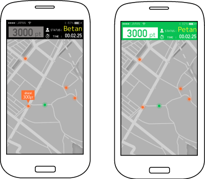

Rule
基本ルール
できるだけたくさん移動してポイントを獲得しましょう!
ただし走ると足跡が地図に表示され、 鬼(Betan)に気づかれてしまいます。
地図上に表示された足跡からは、誰が Betanかは分かりません。

BetanがPetanに一定距離近づくことでタッチとなり、Betanを交代する ことができます。
Betanになるとポイントが加算されなくなってしまいます。
うまくBetanとの遭遇を回避しつつポイントを稼いでいきましょう。
PetanとBetan

Petanは逃げる人です。
Petanでいる間に移動した距離に応じてポイント を獲得することができます。
移動速度が速いほどポイントも多くなります が、地図に足跡が表示されてしまいます。
忍び足で確実にポイントを稼ぐか、見つかるの を覚悟で一発逆転を狙うかはあなたの自由。 逃げて逃げて逃げまくりましょう。

Betanは鬼です。
Betanでいる間はポイントが入りません。 一刻も早く別のPetanを捕まえましょう。
移動速度が速いと地図に足跡が表示されます。 Petanに気づかれないよう慎重に近づくのか、誰 よりも速く走ってタッチするのか、自分の能力 に見合った戦略が鍵となります。
Betanは他のPetanの点数を確認できます。 点数の多いPetanを狙うのも戦略の一つです。
System